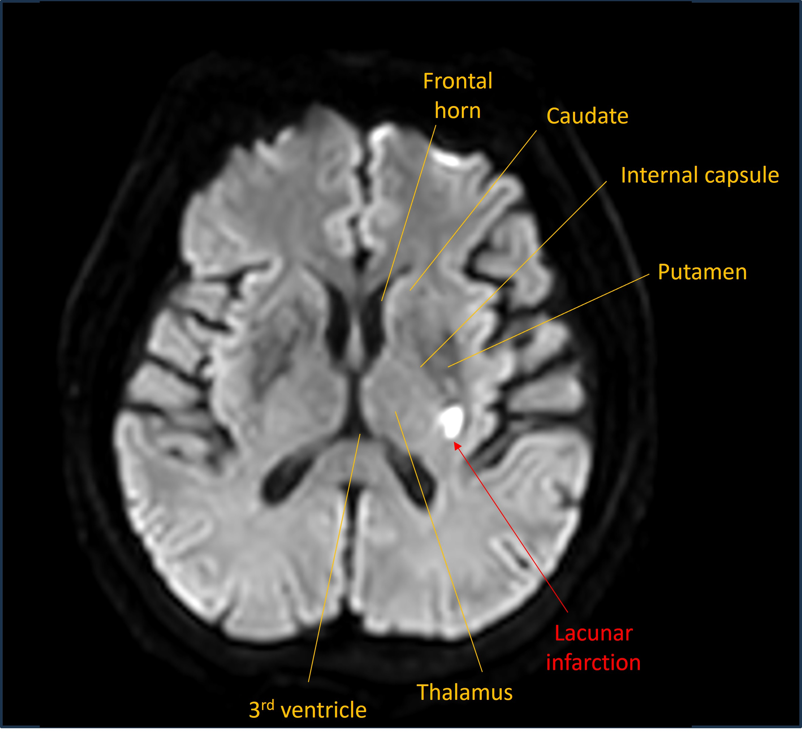
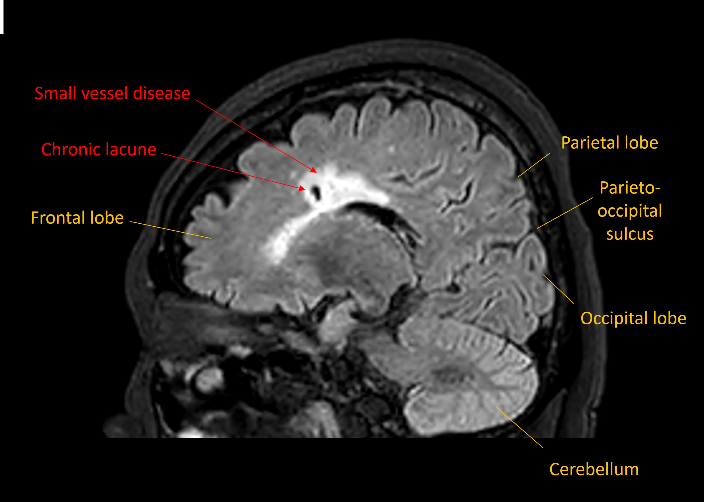

Case 9. Weakness and tingling
Outcome
The patient was admitted. A CT head showed advanced small vessel disease relative to the patient's age (51), though no acute lesions were evident.
An MRI was then performed. This revealed an acute diffusion-restricting lesion in the posterior limb of the internal capsule - consistent with a lacunar stroke in the territory perfused by the small perforating arteries.

There was also evidence of severe small vessel disease changes and chronic clinically-silent lacunar infarcts, seen on the sagittal FLAIR sequence below.

She was given a combination of medications - an antiplatelet, a statin, and blood-pressure reducing agents - as well as having a short period of inpatient rehabilitation.
No other causes were identified to cause stroke - such as carotid artery disease or arrhythmia - and the lesion was attributed to cerebral small vessel disease.
The patient was discharged after a short admission and made a good recovery, though several weeks later still experienced ongoing partial sensory disturbance in the right arm and leg.
Final diagnosisAcute hemibody sensorimotor disturbance due to lacunar infarction in the posterior limb of the internal capsule - sparing the corticobulbar fibres at the genu - in the context of severe, treatment-refractory hypertension and accelerated small vessel disease.
Key pointsReturn to Cases